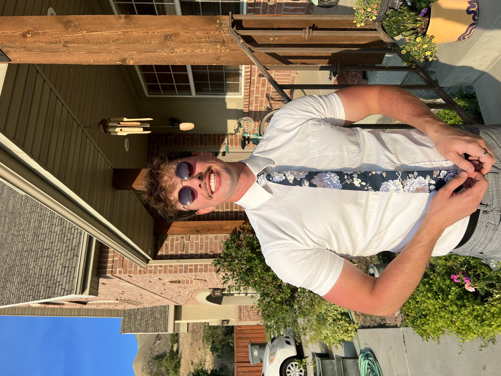
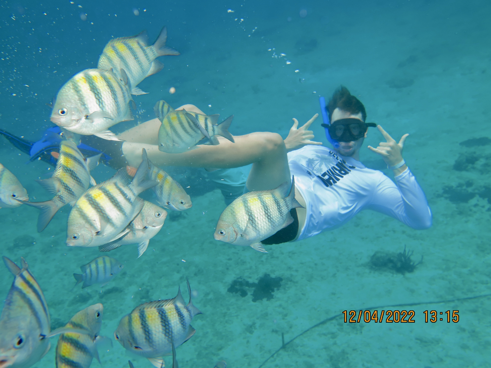
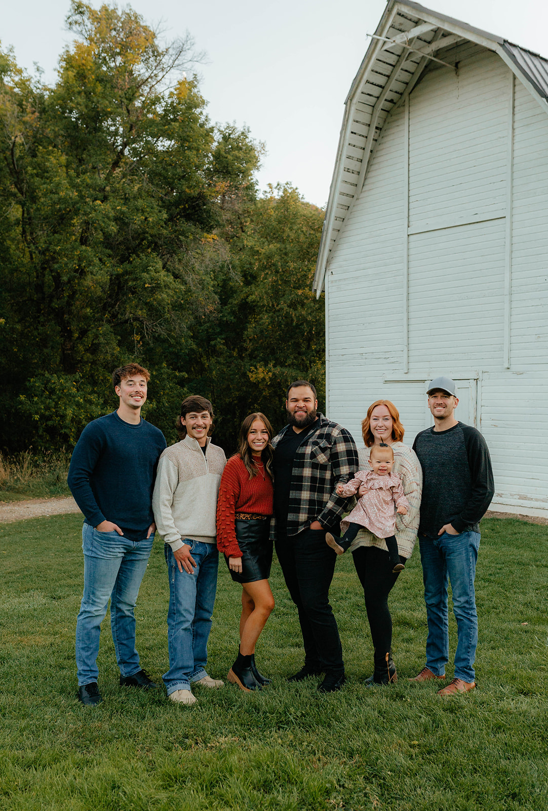
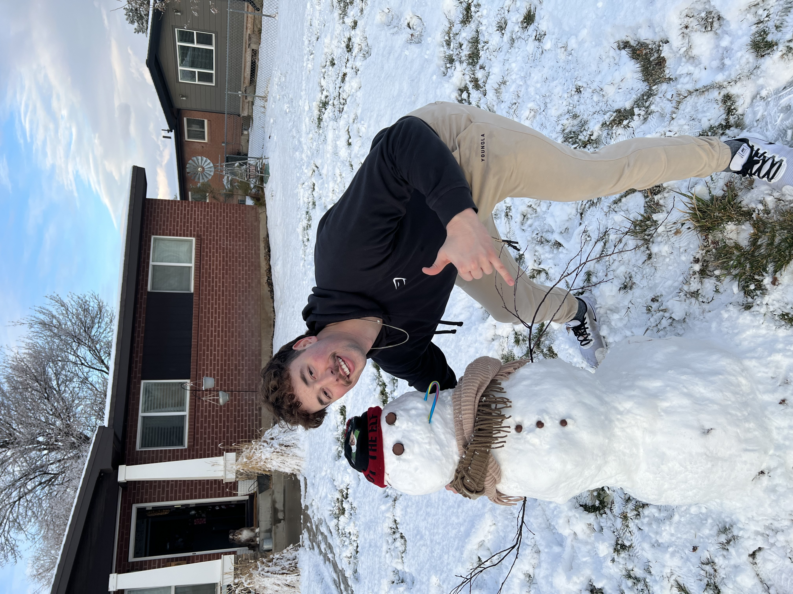
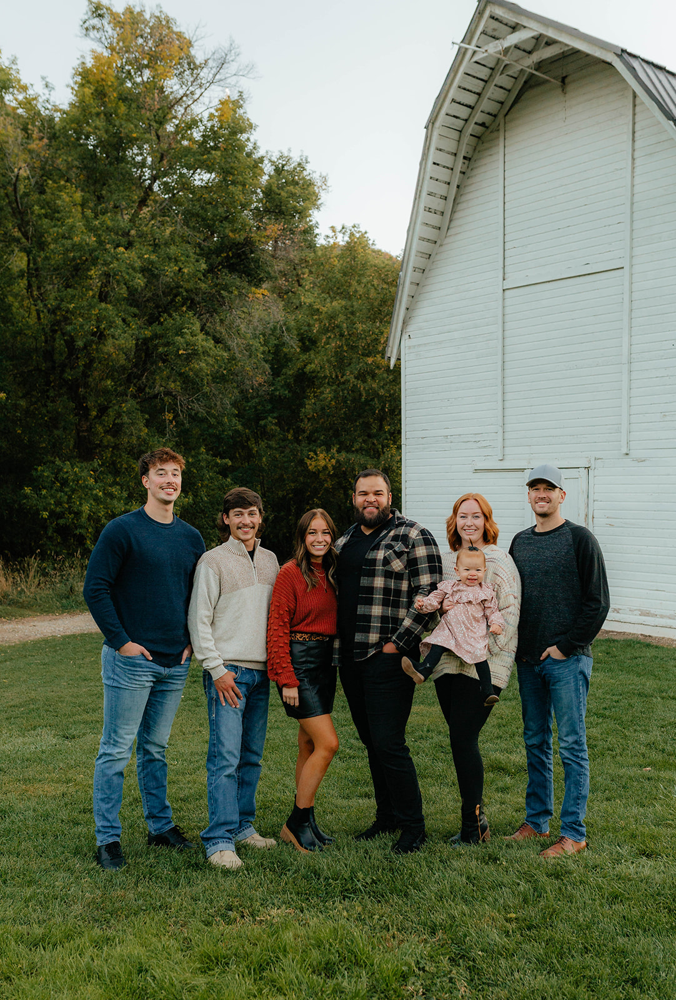
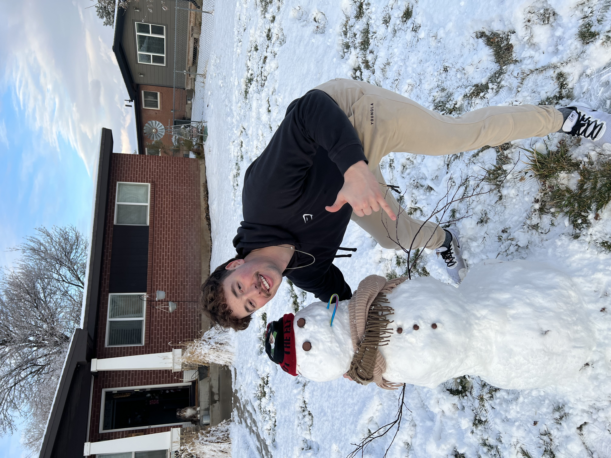

About
A little bit about me, primarily my name is Draden Boyer. I am from the state of Utah. With that I have developed a love for the outdoors. Being in the canyon or on top of mountains. Some of my hobbies include traveling, hiking, camping, fishing and all different kinds of sports, such as; football, basketball, golf, skiing, and so much more! I love being active and going to the gym to improve and better myself a little each day. I've also enjoyed playing video games from a very young age. Computers always interested me. Taking a few Computer Programming classes during highschool to now wanting to become a full time developer. Learning new things always intrigues me and keeps my mind going, with technology it seems there is constantly always something new to learn! I find problem solving and looking to others for help an enjoyable process and fun/interesting to see how others think and solve problems.
  



Skills
Javascript | React | Redux | NodeJs | Express | PostgreSQL | OAuth | Massive | Bcrypt | AWS | CSS | SASS | Git | Github | Bootstrap | Postman | SQL | Data Analytics | HTML5 | Python | Axios | Full Stack Web
Projects
Click here for the Github repository